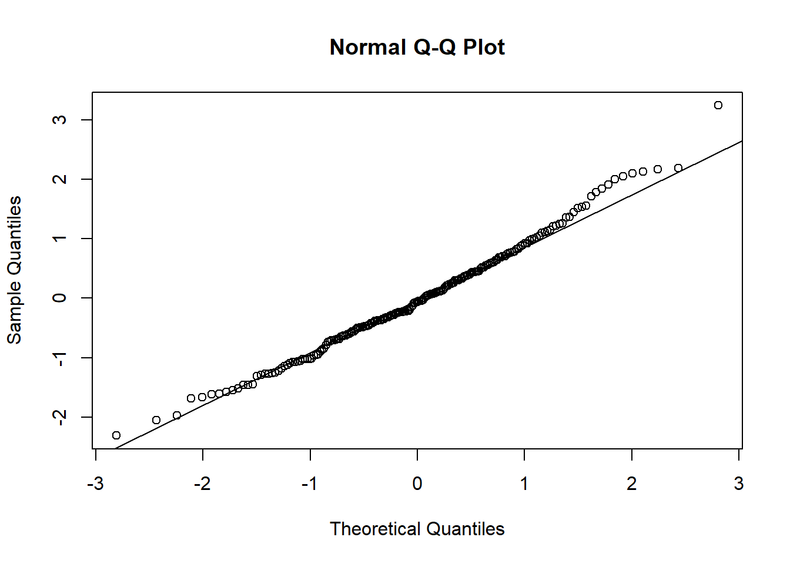

Capítulo 5 Introducción a la estadística
5.4 Estadística inferencial paramétrica: supuestos principales de las pruebas paramétricas
Se conoce como estadística paramétrica a aquella que se basa en el muestreo de una población con una distribución conocida y con parámetros fijos.
Los supuestos de las pruebas paramétricas en general son:
Distribución conocida (normal): visual y pruebas numéricas.
Homocedasticidad: visual y pruebas numéricas.
Otros: tamaño de la muestra, variables cuantitativas o continuas, outliers, aleatoriedad, independencia de las observaciones, linealidad.
5.5 ¿Cómo saber si mis datos presentan una distribución normal y homogeneidad de las variancias?:


5.5.2 Prueba de Shapiro-Wilk
##
## Shapiro-Wilk normality test
##
## data: data_normal
## W = 0.99076, p-value = 0.2298##
## Shapiro-Wilk normality test
##
## data: data_no_normal
## W = 0.89172, p-value = 5.884e-075.5.3 Pruebas de ajuste o distribución: Prueba de Kolmogorov-Smirnov, Prueba de Anderson-Darling
##
## Asymptotic one-sample Kolmogorov-Smirnov test
##
## data: data_normal
## D = 0.053155, p-value = 0.6243
## alternative hypothesis: two-sided##
## Asymptotic one-sample Kolmogorov-Smirnov test
##
## data: data_no_normal
## D = 0.50105, p-value < 2.2e-16
## alternative hypothesis: two-sided5.5.4 Probando Homocedasticidad o heterocedasticidad
## supp len
## 1 OJ 43.63344
## 2 VC 68.32723Ratio
## [1] 1.565895## Species Petal.Width
## 1 setosa 0.01110612
## 2 versicolor 0.03910612
## 3 virginica 0.07543265Ratio
r1<-0.03910612 / 0.01110612 #versicolor vs setosa
r2<-0.07543265 / 0.01110612 #virginca vs setosa
r3<-0.07543264 / 0.03910612 #virginica vs versicolor
cbind(r1,r2,r3)## r1 r2 r3
## [1,] 3.521132 6.791989 1.928922
Prueba para dos niveles = F
##
## F test to compare two variances
##
## data: len by supp
## F = 0.6386, num df = 29, denom df = 29, p-value = 0.2331
## alternative hypothesis: true ratio of variances is not equal to 1
## 95 percent confidence interval:
## 0.3039488 1.3416857
## sample estimates:
## ratio of variances
## 0.6385951##
## studentized Breusch-Pagan test
##
## data: m2
## BP = 25.099, df = 2, p-value = 3.546e-065.5.4.1 Otras pruebas
##
## Cochran test of homogeneity of variances
##
## data: m2
## C = 0.60036, n = 50, k = 3, p-value = 5.531e-06
## alternative hypothesis: Group virginica has outlying variance
## sample estimates:
## setosa versicolor virginica
## 0.0111 0.0391 0.0754## Levene's Test for Homogeneity of Variance (center = median)
## Df F value Pr(>F)
## group 2 19.892 2.261e-08 ***
## 147
## ---
## Signif. codes: 0 '***' 0.001 '**' 0.01 '*' 0.05 '.' 0.1 ' ' 1Ejemplo:
data(iris)
cols<- c("Largo_Sepalo", "Ancho_Sepalo", "Largo_Petalo", "Ancho_Petalo", "Especies")
colnames(iris)<- colsEste conjunto de datos describe tres especies de las flores iris y como cambia el ancho y largo de su pétalo y sépalo. Veamos la estructura de los datos:
## 'data.frame': 150 obs. of 5 variables:
## $ Largo_Sepalo: num 5.1 4.9 4.7 4.6 5 5.4 4.6 5 4.4 4.9 ...
## $ Ancho_Sepalo: num 3.5 3 3.2 3.1 3.6 3.9 3.4 3.4 2.9 3.1 ...
## $ Largo_Petalo: num 1.4 1.4 1.3 1.5 1.4 1.7 1.4 1.5 1.4 1.5 ...
## $ Ancho_Petalo: num 0.2 0.2 0.2 0.2 0.2 0.4 0.3 0.2 0.2 0.1 ...
## $ Especies : Factor w/ 3 levels "setosa","versicolor",..: 1 1 1 1 1 1 1 1 1 1 ...## [1] 150 5## [1] 150## [1] 5Como vemos, posee 4 variables de respuesta y un factor que sería la especie de flor.
- Explorando normalidad en los datos
Existen diversas gráficas que podemos realizar para probar o explorar si nuestros datos siguen una distribución normal (también llamada distribución gaussiana) y su gráfica debe tener una forma acampanada y simétrica. La aplicación de muchas pruebas y estadísticos depende de si los datos siguen esta distribución o no. Por esto es importante antes de aplicar cualquier prueba estadística, explorar la distribución de nuestros datos y sí la prueba o estadístico que aplicamos asume que nuestros datos sean normales o no. Para este ejemplo, usaremos el ancho del sepalo en vez del largo del sepalo. ¨

## [1] 16 34Al parecer nuestros datos tienen una distribución normal, según los gráficos, sin embargo, para estar seguros de esto, haremos una prueba llamada test de shapiro que nos permitirá confirmar esto:
##
## Shapiro-Wilk normality test
##
## data: iris$Ancho_Sepalo
## W = 0.98492, p-value = 0.1012
La hipótesis nula que estamos aceptando o rechazando con esta prueba es que la distribución es normal y escogiendo un valor de probabilidad de 0.05 y dado que 0.1012 > 0.05 no podemos rechazar la hipótesis nula. En caso que este valor de p-value < 0.05 entonces los datos no serían normales.